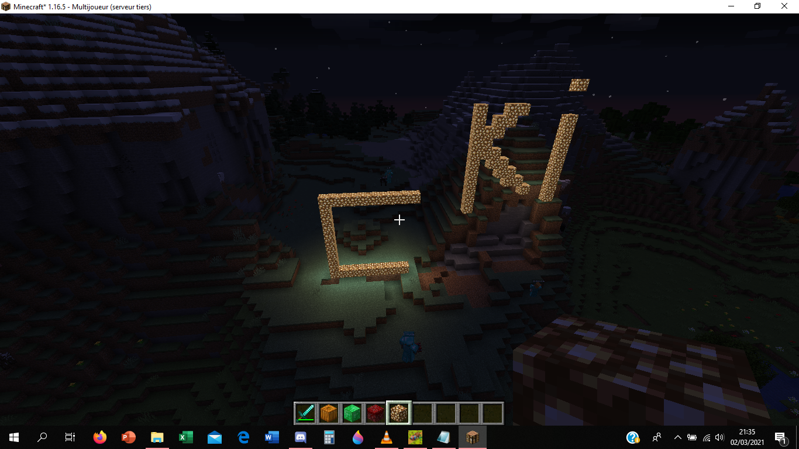

Plugins & autres¶
Un plugin est un mod pour serveur utilisant le logiciel serveur Bukkit ou un de ses dérivés (Spigot, Paper, Purpur, etc.). C'est le cas de ChômageLand, qui dispose par ailleurs de plusieurs plugins.
Un datapack est un type de mod qu'il est possible d'associer à un monde Minecraft en particulier pour en modifier le comportement. Ce type de mod, moins poussé que les autres, est supporté nativement par Minecraft et leur installation est très simple. Le monde survie de ChômageLand en possède plusieurs.
Cette page liste également les spécifications techniques en vrac du serveur ainsi qu'un historique.
Plugins¶
-
DiscordSRV
Assure la liaison entre le serveur Minecraft et le serveur Discord. -
Multiverse-CoreMultiverse-InventoriesMultiverse-NetherPortals
Implémente le système de mondes multiples et régule les intéractions entre ceux-ci. -
LuckPerms
Gestion des permissions. -
DriveBackupV2
Gestion des backups: upload quotidien d'un backup des mondes vers ce dossier GDrive. -
SimpleTPA
Ajout du/tpapour se téléporter à un joueur. -
TAB
Personnalisation du menu TAB. -
Maintenance
Gestion des maintenances.
Datapacks¶
-
Anti Enderman Grief - Vanilla Tweaks
Empêche les endermen de manipuler les blocs. -
Multiplayer Sleep - Vanilla Tweaks
Permet à un seul joueur de faire passer la nuit lorsque plusieurs personnes sont connectées. -
Fast Leaf Decay - Vanilla Tweaks
Les feuilles des arbres disparaissent plus vite. -
Graves - Vanilla Tweaks
Une tombe apparaît à la mort d’un joueur avec tout son stuff à l’intérieur. -
Villager Workstation Highlights - Vanilla Tweaks
Permet de trouver la workstation de n’importe quel villageois. -
AllMobsHeads
Datapack ajoutant une tête pour tous les mobs du jeu (et plus !): ils ont tous une probabilité de la dropper à leur mort, attrapez-les toutes !
Spécifications techniques¶
- Hébergeur: PebbleHost - Formule Budget - 4GB
- Logiciel serveur: Purpur 1.19.2 (Build 1770)
- Taille du monde survie: 3,05 GiB (au 2022-08-31)
- Seed du monde survie:
-3096418578045786467 - Difficulté: Normale
- Distance de rendu: 12 chunks
Historique¶
- 2022-08-31: Changement de version (Purpur 1.19.2)
- 2022-08-16: Acquisition du nom de domaine
chomageland.fr, lancement officiel - 2022-08-10: Création du site Web officiel
- 2022-07-23: Création et lancement du serveur Discord
- 2022-01-17: Lancement du Multiverse
- 2022-01-06: Changement de version (Purpur 1.18.1)
- 2021-08-08: Changement de logiciel serveur (Fabric 1.16.5)
- 2021-03-02 21h07: Lancement du serveur (Paper 1.16.5)
- 2021-03-02 19h57: Stessy propose de nommer le serveur en référence à Pôle Emploi
- 2021-03-02 15h45: Idée de serveur proposée sur Discord
 Tout premier screenshot posté sur le groupe on peut tout couper le 2022-03-02 à 21h35.
Messages de la première soirée du serveur¶
Messages postés sur le groupe Discord on peut tout couper dans la soirée du 2 mars 2021.
Cliquez-ici pour accéder à la version imagée et mise en forme.
==============================================================
Channel: Group / on peut tout couper
After: 2021-03-02 15:23:00 UTC+1
Before: 2021-03-03 01:49:00 UTC+1
Messages: 436
==============================================================
[2021-03-02 15:24:36] <Mathis M-H> @ЩİŁĿγ @€lsa @Dieu @ThomasLago /!\ Sondage OpinionWay pour BFMTV: Qui possède Minecraft sur PC (Java Edition) ?
[2021-03-02 15:34:17] <Dieu> non
[2021-03-02 15:41:43] <€lsa> non
[2021-03-02 15:42:06] <€lsa> Mon pc fais déjà une crise d’épilepsie quand j’ouvre Word
[2021-03-02 15:43:22] <Dieu> 🤣
[2021-03-02 15:43:33] <Dieu> moi ça va
[2021-03-02 15:43:48] <Dieu> franchement il est bien
[2021-03-02 15:43:54] <Mathis M-H> certes
[2021-03-02 15:44:15] <Mathis M-H> mais j'ai les techniques pour faire tourner Minecraft de manière à peu près correcte
[2021-03-02 15:44:33] <Dieu> perso j'aime pas jouer à minecraft sur PC
[2021-03-02 15:44:39] <Dieu> j'ai l'habitude sur PS4
[2021-03-02 15:45:17] <Mathis M-H> En fait j'ai posé la question pour voir si y aurait moyen de se faire un petit serveur des familles
[2021-03-02 15:45:28] <Dieu> 🤣
[2021-03-02 15:45:32] <Mathis M-H> pour jouer ensemble
[2021-03-02 15:45:38] <Mathis M-H> m'voyez ?
[2021-03-02 15:45:42] <Dieu> je l'installe tout de suite 🤣
[2021-03-02 15:46:05] <Mathis M-H> 😮
[2021-03-02 15:46:34] <Dieu> question d'abord
[2021-03-02 15:46:40] <Dieu> c une version gratuite ?
[2021-03-02 15:47:09] <Mathis M-H> nope, mais il y a moyen d'ouvrir le serveur aux versions crackées (piratées) si besoin...
[2021-03-02 15:47:19] <Dieu> 🤣
[2021-03-02 15:47:47] <Dieu> on peut pas se co avec une version gratuite ?
[2021-03-02 15:48:09] <Mathis M-H> c'est-à-dire ?
[2021-03-02 15:48:14] <Mathis M-H> une version gratuite ?
[2021-03-02 15:48:32] <Dieu> jouer ensemble mais sur une version gratuite de minecraft
[2021-03-02 15:48:51] <Mathis M-H> une version gratuite ?
[2021-03-02 15:48:54] <Mathis M-H> x)
[2021-03-02 15:48:59] <Dieu> genre un dérivé
[2021-03-02 15:49:03] <Mathis M-H> ah
[2021-03-02 15:49:04] <Dieu> 🤣
[2021-03-02 15:49:06] <Mathis M-H> ouai nan
[2021-03-02 15:49:12] <Dieu> bon dommage
[2021-03-02 15:49:41] <Mathis M-H> par contre tu peux te procurer Minecraft le vrai gratuitement assez facilement
[2021-03-02 15:49:57] <Dieu> dis toujours 🤣
[2021-03-02 15:51:02] <Mathis M-H> je déconne même pas, à l'époque quand les parents voulaient pas acheter le jeu tout le monde faisait ça... la bonne époque putain
[2021-03-02 15:51:26] <Mathis M-H> j'ai commencé à jouer comme ça
[2021-03-02 15:51:42] <Dieu> ben dis comment faire 🤣
[2021-03-02 15:52:04] <Dieu> du moment que ça reste légal mdr je veux pas voir les flics devant chez moi 🤣
[2021-03-02 15:54:10] <Mathis M-H> nan t'inquiète... ça doit pas être légal mais genre vraiment TOUT LE MONDE faisait ça, tu trouve encore aujourd'hui des tutos à la kilotonne pour cracker le jeu. Je crois que le créateur du jeu lui-même à dit qu'il s'en battait les couilles
[2021-03-02 15:54:42] <Dieu> 🤣
[2021-03-02 15:54:51] <Dieu> pas mal, j'aime ce créateur
[2021-03-02 15:57:10] <Mathis M-H> (pinned) https://youtu.be/Vs-1beBtdRQ par exemple, 123 000 vues...
[2021-03-02 15:58:12] <Dieu> je verrai ça se soir
[2021-03-02 15:58:17] <Dieu> ça serait pas mal en vrai
[2021-03-02 15:58:26] <Dieu> si on pouvait jouer ensemble
[2021-03-02 15:58:32] <Dieu> on raterai notre année
[2021-03-02 15:58:37] <Mathis M-H> yes
[2021-03-02 16:09:18] <€lsa> J’ai pas minecraft sur l’ordi mais ça veut pas dire que j’ai pas minecraft
[2021-03-02 16:11:32] <Dieu> oui moi aussi je l'ai
[2021-03-02 16:11:36] <Dieu> mais sur PS4
[2021-03-02 16:23:53] <Mathis M-H> ouaip je l'ai aussi sur ps4 mais pour jouer en mutli il faut un abonnement payant PSPlus
[2021-03-02 16:24:22] <€lsa> Switch ça marche ?
[2021-03-02 16:24:38] <Dieu> je vais regarder pour le mettre sur ordi
[2021-03-02 16:24:47] <Dieu> comme ca on peut jouer en perm 🤣
[2021-03-02 16:24:58] <Dieu> faut créer un compte sur java ?
[2021-03-02 16:30:04] <Mathis M-H> ouaip switch ps4 xbox tout est lié
[2021-03-02 16:30:11] <Mathis M-H> mais ça reste payant
[2021-03-02 16:30:27] <Mathis M-H> @Dieu un compte sur Java ?
[2021-03-02 16:30:53] <Dieu> c une question
[2021-03-02 16:31:12] <Dieu> c juste un truc à télécharger ou faut créer un compte ?
[2021-03-02 16:32:51] <Mathis M-H> java c'est un truc à télécharger pour faire tourner Minecraft
[2021-03-02 16:32:54] <Mathis M-H> c'est gratuit
[2021-03-02 16:33:08] <Dieu> ok
[2021-03-02 16:34:24] <Dieu> et toi t'as aussi cette version ou t'as la payante ?
[2021-03-02 16:34:38] <Mathis M-H> j'ai la version payante
[2021-03-02 16:34:51] <Dieu> espèce de riche
[2021-03-02 16:34:55] <Mathis M-H> sah
[2021-03-02 16:35:41] <Dieu> ptn y a trop de java
[2021-03-02 16:36:11] <Mathis M-H> bon j'ai rien payé du tout, c'est mon grand-père qui avait gentillement accepté de me l'acheter en 2014: j'était le petit garçon le plus heureux du MONDE
[2021-03-02 16:36:50] <Dieu> 🤣
[2021-03-02 16:36:57] <Dieu> tu m'étonnes minecraft c la vie
[2021-03-02 16:37:04] <€lsa> Si on peux jouer à minecraft
[2021-03-02 16:37:12] <€lsa> Ça serait d’une part génial
[2021-03-02 16:37:19] <€lsa> Mais on va être en échec scolaire
[2021-03-02 16:37:23] <Dieu> et au moins quand je serai plus chez moi et que j'aurai plus la PS4 j'aurai l'ordi
[2021-03-02 16:37:32] <Dieu> blc échec scolaire
[2021-03-02 16:37:36] <ЩİŁĿγ> Ben si on peut jouer a Minecraft sans payer en coop
[2021-03-02 16:37:42] <Dieu> si ca se trouve je vais arreter les etudes
[2021-03-02 16:37:48] <Dieu> moi j'installe
[2021-03-02 16:37:53] <ЩİŁĿγ> J'ai joué avec Adrien moi
[2021-03-02 16:37:54] <Dieu> mais c quel java
[2021-03-02 16:37:57] <Dieu> y en a trop
[2021-03-02 16:38:10] <ЩİŁĿγ> Sur un crack de Minecraft
[2021-03-02 16:38:14] <ЩİŁĿγ> Shinigima
[2021-03-02 16:38:19] <ЩİŁĿγ> Launcher
[2021-03-02 16:39:38] <Mathis M-H> oui mais je parlais sur console
[2021-03-02 16:39:45] <ЩİŁĿγ> Ah
[2021-03-02 16:39:54] <ЩİŁĿγ> T fou
[2021-03-02 16:40:06] <ЩİŁĿγ> J ai pas de console xD
[2021-03-02 16:40:15] <ЩİŁĿγ> Pc master race mec
[2021-03-02 16:40:33] <Mathis M-H> ah mais oui bien sur
[2021-03-02 16:40:46] <Mathis M-H> @Dieu y a que un Java non ?
[2021-03-02 16:40:53] <Mathis M-H> https://www.java.com/fr/download/
[2021-03-02 16:41:07] <Dieu> jsp j'ai trouvé celui de la vidéo
[2021-03-02 16:41:19] <Dieu> chez moi y avait pleins de java alignés 🤣
[2021-03-02 16:41:30] <Mathis M-H> trop de java tue le java
[2021-03-02 16:41:43] <Dieu> oui 🤣
[2021-03-02 16:42:01] <€lsa> The floor is java
[2021-03-02 16:42:07] <Dieu> j'espère que ca marche encore
[2021-03-02 16:58:26] <€lsa> Du coup ça marche ?
[2021-03-02 16:58:43] <Mathis M-H> apparament
[2021-03-02 16:59:40] <Mathis M-H> bon si vous jouez sur l'ordi du lycée ou sur un autre PC pourri, les performances vont être pas ouf, du coup je vous prépare un petit tuto pour optimiser tout ça
[2021-03-02 17:00:13] <Dieu> https://cdn.discordapp.com/attachments/776932464165126185/816339122729386004/unknown.png
[2021-03-02 17:00:20] <€lsa> WoW
[2021-03-02 17:00:32] <Dieu> perso j'ai pas de pb avec l'ordi du lycée
[2021-03-02 17:00:35] <Dieu> ça marche
[2021-03-02 17:00:36] <Mathis M-H> nice
[2021-03-02 17:00:41] <Dieu> tu sais pas ce que je ressent là
[2021-03-02 17:00:47] <€lsa> 🤣🤣
[2021-03-02 17:00:54] <Dieu> je suis plus obligée de partager 🤣
[2021-03-02 17:01:00] <Mathis M-H> nan mais les performances quand tu joue dans un monde
[2021-03-02 17:01:08] <€lsa> On test ?
[2021-03-02 17:01:31] <Dieu> tu l'as aussi mis ?
[2021-03-02 17:01:45] <€lsa> Nan je l’ai sur switch
[2021-03-02 17:01:58] <Dieu> ptn je vais passer tout mon temps dessus
[2021-03-02 17:02:04] <€lsa> 🤣🤣
[2021-03-02 17:02:14] <€lsa> Déjà qu’en classe on fait pas grand chose
[2021-03-02 17:02:21] <Dieu> je préfère jouer sur PS4 mais l'année pro je pourrais pas la prendre
[2021-03-02 17:02:29] <€lsa> Dommage
[2021-03-02 17:02:37] <Dieu> oui on a pas besoin de minecraft pour être en échec scolair
[2021-03-02 17:02:37] <Dieu> e
[2021-03-02 17:02:39] <€lsa> Du coup on essaye de ce co
[2021-03-02 17:02:45] <Dieu> oui
[2021-03-02 17:02:54] <€lsa> Pas faux le jeu du solitaire nous suffit 😂
[2021-03-02 17:02:55] <Dieu> faut faire comment ? 🤣
[2021-03-02 17:03:08] <€lsa> Je sais pas 🤷🏼♀️
[2021-03-02 17:03:08] <Dieu> même une feuille un stylo et c'est déjà mort
[2021-03-02 17:03:10] <€lsa> @Mathis M-H
[2021-03-02 17:03:15] <€lsa> On a besoin de ton génie
[2021-03-02 17:03:38] <Mathis M-H> pour jouer ensemble ? pas si vite malheureuses ! c'est pas si simple: il faut un serveur
[2021-03-02 17:03:49] <€lsa> Alors fait
[2021-03-02 17:03:49] <Dieu> par contre ça me saoule sur PS4 j'ai fait tout un monde zelda que j'ai pas sur ordi
[2021-03-02 17:03:52] <€lsa> J’exige
[2021-03-02 17:03:58] <Mathis M-H> oui madame
[2021-03-02 17:03:59] <Dieu> moi aussi j'exige
[2021-03-02 17:04:12] <Mathis M-H> mais ça sera pas avant ce soir
[2021-03-02 17:04:30] <€lsa> Ça prend tellement de temps ?
[2021-03-02 17:04:35] <Mathis M-H> oui
[2021-03-02 17:05:11] <€lsa> Si j’ai l’abonnement online ça suffit ?
[2021-03-02 17:05:21] <Dieu> par contre c chiant quand je veux appuyer sur discord mon bonhomme regarde juste en bas 🤣
[2021-03-02 17:05:31] <Dieu> quelle beauté https://cdn.discordapp.com/attachments/776932464165126185/816340455557955614/unknown.png
[2021-03-02 17:05:35] <€lsa> 🤣
[2021-03-02 17:05:40] <Mathis M-H> pour jouer sur console oui
[2021-03-02 17:05:45] <Mathis M-H> il me semble
[2021-03-02 17:05:50] <€lsa> Ok alors c’est bon
[2021-03-02 17:05:56] <Mathis M-H> @Dieu ça marche bien ?
[2021-03-02 17:06:01] <Dieu> oui
[2021-03-02 17:06:11] <Dieu> c juste chiant les commandes
[2021-03-02 17:06:19] <Mathis M-H> ça ram pas trop ?
[2021-03-02 17:06:21] <Dieu> je pense que je vais connecter une manette
[2021-03-02 17:06:24] <Dieu> non ca va
[2021-03-02 17:07:19] <Dieu> https://cdn.discordapp.com/attachments/776932464165126185/816340909758218300/unknown.png
[2021-03-02 17:07:22] <Dieu> PTN JE ME NOIE
[2021-03-02 17:07:29] <Mathis M-H> oupe
[2021-03-02 17:07:30] <Dieu> ON FAIT COMMENT POUR FLOTTER /RO
[2021-03-02 17:07:36] <Dieu> /RO
[2021-03-02 17:07:37] <Mathis M-H> ESPACE
[2021-03-02 17:07:42] <Dieu> BORDEL 🤣
[2021-03-02 17:07:46] <Dieu> merci 🤣
[2021-03-02 17:11:38] <Dieu> encore une question, on fait comment pour ouvrir l'inventaire ? 🤣
[2021-03-02 17:11:45] <Mathis M-H> E
[2021-03-02 17:11:50] <Dieu> ok merci
[2021-03-02 17:12:22] <Dieu> c dommage j'aurai préféré jouer sur PS4 parce qu'au moins je connais les commande
[2021-03-02 17:12:34] <Mathis M-H> fait la touche Echap, t'as le menu qui s'ouvre et normalement tu dois pouvoir trouver les contrôles, les touches
[2021-03-02 17:13:18] <Dieu> ok merci
[2021-03-02 17:29:42] <Mathis M-H> (pinned) BOOM petit tuto pour optimiser les performances de Minecraft et ainsi pouvoir jouer tranquillement. Je vous le recommande vivement ! https://cdn.discordapp.com/attachments/776932464165126185/816346542839169075/Tuto_mods_performances.txt
[2021-03-02 17:40:50] <Dieu> merci !
[2021-03-02 17:42:13] <Mathis M-H> t'as suivi le tuto ?
[2021-03-02 18:23:28] <Mathis M-H> Ok récapitulons: qui est chaud pour jouer ensemble sur un serveur Minecraft sur PC ? @ЩİŁĿγ @€lsa @Dieu @ThomasLago
[2021-03-02 18:23:40] <€lsa> Moi c’est ok
[2021-03-02 18:25:49] <€lsa> https://youtu.be/we3Y9nFk0Tw
[2021-03-02 18:25:58] <€lsa> @Dieu je sais ce qu’on va faire à la rentrée
[2021-03-02 18:30:40] <Dieu> oui, faire voler des sachets de thé 🤣 je veux essayer
[2021-03-02 18:30:50] <Dieu> moi aussi
[2021-03-02 18:30:53] <Dieu> pour jouer
[2021-03-02 18:31:21] <Dieu> mais soyez gentils d'être gentil car les commandes et moi sommes encore fâchés
[2021-03-02 18:32:13] <Dieu> j'aurai aimé vous montrer mon monde de zelda et mon grand chateau avec tous ces passages, faudra qu'on s'invite pendant les grandes vacances (tant qu'on peut encore le faire)
[2021-03-02 18:37:25] <ЩİŁĿγ> Moi ui
[2021-03-02 18:38:35] <Mathis M-H> NICE on est déjà 4
[2021-03-02 18:40:13] <Dieu> @ThomasLago tu joue c un ordre
[2021-03-02 19:17:44] <ThomasLago> Minecraft java ?
[2021-03-02 19:17:51] <Dieu> oui
[2021-03-02 19:18:01] <Mathis M-H> of course
[2021-03-02 19:18:04] <ThomasLago> AH COM'ON
[2021-03-02 19:18:21] <ThomasLago> Bon j'vais mettre a jour ma version...
[2021-03-02 19:18:22] <Mathis M-H> Pinned a message.
[2021-03-02 19:18:41] <Dieu> j'ai pas encore optimisé
[2021-03-02 19:18:53] <Dieu> de toute façon faudra attendre que j'ai mangé
[2021-03-02 19:23:34] <ThomasLago> Du coup elle se met comment la java édition ?
[2021-03-02 19:23:50] <Mathis M-H> c'est-à-dire ?
[2021-03-02 19:23:52] <Dieu> mathis avait mis une vidéo en haut
[2021-03-02 19:24:08] <Dieu> Pinned a message.
[2021-03-02 19:24:08] <Mathis M-H> toi thomas t'as acheté le jeu non ?
[2021-03-02 19:24:22] <Dieu> bande de riches
[2021-03-02 19:24:23] <ThomasLago> Yep
[2021-03-02 19:24:38] <Mathis M-H> bah voila tu le télécharge sur minecraft.net
[2021-03-02 19:24:44] <ThomasLago> Ok
[2021-03-02 19:43:37] <Mathis M-H> WOW PUTAIN CA MARCHE 1000x MIEUX QUE CE QUE JE PENSAIS
[2021-03-02 19:43:48] <Mathis M-H> Le serveur tourne du feu de dieu
[2021-03-02 19:43:55] <Mathis M-H> c ouf
[2021-03-02 19:44:05] <Mathis M-H> En même temps je suis tout seul dessus...
[2021-03-02 19:44:18] <Dieu> 🤣
[2021-03-02 19:44:26] <ThomasLago> Quel est le nom du serveur ?
[2021-03-02 19:44:31] <Dieu> mais
[2021-03-02 19:44:35] <Dieu> on s'attend pas ?
[2021-03-02 19:44:44] <Mathis M-H> il a pas de nom pour l'instant
[2021-03-02 19:44:52] <Mathis M-H> si si la je test tout ça
[2021-03-02 19:45:04] <Mathis M-H> envoyez vos idées de nom pour le serv
[2021-03-02 19:45:16] <Dieu> stessy est géniale
[2021-03-02 19:45:22] <Mathis M-H> non
[2021-03-02 19:45:28] <Dieu> je vais vous dire qui c'est
[2021-03-02 19:45:35] <Mathis M-H> rien n'incluant de l'auto-fellation
[2021-03-02 19:45:56] <Dieu> je vais vous dire qui c'est
[2021-03-02 19:46:11] <Dieu> c pas mal comme nom
[2021-03-02 19:46:18] <Mathis M-H> NON
[2021-03-02 19:46:27] <Dieu> t'es difficile
[2021-03-02 19:46:43] <Dieu> champignocyteland
[2021-03-02 19:46:58] <Mathis M-H> mouai
[2021-03-02 19:47:03] <Mathis M-H> pas ouf
[2021-03-02 19:47:33] <Dieu> le monde des bisounours
[2021-03-02 19:47:39] <Dieu> 🤣
[2021-03-02 19:47:46] <Dieu> je cherche tous les noms pourris
[2021-03-02 19:50:31] <Dieu> le monde fabuleux de planninsic
[2021-03-02 19:50:42] <Dieu> je vais faire pleins de planninsic en cage
[2021-03-02 19:50:58] <Dieu> avec toi et williame dedans aussi
[2021-03-02 19:54:38] <Mathis M-H> pour l'instant on en est là https://cdn.discordapp.com/attachments/776932464165126185/816383014355337227/Capture.PNG
[2021-03-02 19:54:57] <Dieu> post
[2021-03-02 19:55:17] <Dieu> wesh je veux pas une photo du canard pour les toilettes
[2021-03-02 19:55:50] <ThomasLago> TU RESPECTE LE CANARD OK !!??
[2021-03-02 19:55:55] <Mathis M-H> merci
[2021-03-02 19:55:55] <ThomasLago> post
[2021-03-02 19:56:00] <Dieu> https://cdn.discordapp.com/attachments/776932464165126185/816383357948264448/unknown.png
[2021-03-02 19:56:14] <Dieu> met un loup ca a plus de gueule
[2021-03-02 19:56:21] <Mathis M-H> sinon pour le nom d'autres idées ?
[2021-03-02 19:56:33] <Mathis M-H> post ou cancer c'est marrant mais bon
[2021-03-02 19:56:43] <ThomasLago> C'est q....ouais nan ....
[2021-03-02 19:56:51] <Dieu> 🤣
[2021-03-02 19:57:05] <Dieu> hyrule 🤣
[2021-03-02 19:57:08] <ThomasLago> Ah je sais : pourquoi on a rater notre bac cette année
[2021-03-02 19:57:17] <Dieu> 🤣
[2021-03-02 19:57:21] <Mathis M-H> ah oui y a un truc là
[2021-03-02 19:57:27] <Dieu> pole emploi
[2021-03-02 19:57:27] <Mathis M-H> on peut travailler là dessus
[2021-03-02 19:57:31] <Mathis M-H> oh
[2021-03-02 19:57:38] <Mathis M-H> répète
[2021-03-02 19:57:43] <Dieu> pole emploi
[2021-03-02 19:57:48] <Mathis M-H> oh ptn
[2021-03-02 19:57:50] <Dieu> 🤣
[2021-03-02 19:58:00] <Dieu> moi je dit qu'on garde ça
[2021-03-02 19:58:27] <Mathis M-H> "Agence Pôle Emploi 93"
[2021-03-02 19:58:30] <Dieu> comme ça quand on se co on sait tous ce qui nous attend
[2021-03-02 19:58:47] <Mathis M-H> ok on verra ça plus tard je vais manger
[2021-03-02 19:58:52] <Dieu> paul emploie
[2021-03-02 19:58:56] <Dieu> bon app 🤣
[2021-03-02 21:02:42] <€lsa> Du coup on commence ?
[2021-03-02 21:03:31] <ThomasLago> Yep
[2021-03-02 21:03:32] <Mathis M-H> ouaip 2 minutes
[2021-03-02 21:04:01] <ThomasLago> Du coup c'est quoi les identifiants du serveur ?
[2021-03-02 21:04:17] <Mathis M-H> Ils arrivent
[2021-03-02 21:04:38] <€lsa> Il y a ma sœur qui veut aussi jouer 🤣
[2021-03-02 21:04:41] <ThomasLago> SCHNELL
[2021-03-02 21:04:53] <Dieu> rho non
[2021-03-02 21:05:01] <ThomasLago> ça pourrait être marrent xD
[2021-03-02 21:05:02] <Dieu> c moins marrant c y a pas que nous
[2021-03-02 21:05:21] <€lsa> T’inquiète elle est pas chiante
[2021-03-02 21:05:26] <€lsa> Je la contrôle
[2021-03-02 21:05:27] <ЩİŁĿγ> Ouais enfin notre vocabulaire on va devoir le surveiller si elle vient
[2021-03-02 21:05:37] <Dieu> si puisque déjà elle veut s'incrust
[2021-03-02 21:05:38] <€lsa> Nan t’inquiète
[2021-03-02 21:06:00] <ЩİŁĿγ> On va pas parler de sodomie avec ta sœur a côté qd même xD
[2021-03-02 21:06:25] <Dieu> ouais même sans parler de ça c nul si on est pas entre nous
[2021-03-02 21:06:27] <€lsa> De toute façon. Elle va bientôt au lit
[2021-03-02 21:06:41] <ЩİŁĿγ> Elle a quel âge ?
[2021-03-02 21:06:47] <Dieu> ça tombe bien j'ai encore un truc àinstaller
[2021-03-02 21:06:56] <Dieu> d'ici à ce que j'ai fini elle sera couchée 🤣
[2021-03-02 21:07:13] <Mathis M-H> Et...
[2021-03-02 21:07:14] <€lsa> 11 ans
[2021-03-02 21:07:25] <Mathis M-H> (pinned) VOICI L'IP: XXX.XXX.XXX.XXX:XXXXX
[2021-03-02 21:07:39] <€lsa> faut mettre les points ?
[2021-03-02 21:07:49] <Mathis M-H> oui il faut tout mettre
[2021-03-02 21:07:55] <€lsa> on me dit de rentrer un "gamertag"
[2021-03-02 21:07:57] <Dieu> https://cdn.discordapp.com/attachments/776932464165126185/816401466205667338/unknown.png
[2021-03-02 21:08:03] <Dieu> qqs minutes svp
[2021-03-02 21:08:09] <Mathis M-H> what
[2021-03-02 21:08:19] <Mathis M-H> avec le truc que j'avais envoyé ?
[2021-03-02 21:08:22] <Dieu> oui
[2021-03-02 21:08:37] <Mathis M-H> Bah met ton nom
[2021-03-02 21:08:41] <Mathis M-H> "Bouddha"
[2021-03-02 21:08:50] <Mathis M-H> ou "ElsaLaBest57_"
[2021-03-02 21:11:02] <€lsa> c'est quoi le nom du groupe ?
[2021-03-02 21:11:09] <Dieu> c'est le troisième ? https://cdn.discordapp.com/attachments/776932464165126185/816402269619748884/unknown.png
[2021-03-02 21:11:17] <Mathis M-H> yes
[2021-03-02 21:11:22] <Mathis M-H> le nom du groupe ?
[2021-03-02 21:11:25] <€lsa> on me demande de mettre un gamertag avec 16 caractère max
[2021-03-02 21:11:30] <€lsa> du serveur
[2021-03-02 21:11:37] <Mathis M-H> envoie une capture
[2021-03-02 21:12:06] <Mathis M-H> Pinned a message.
[2021-03-02 21:12:15] <€lsa> https://cdn.discordapp.com/attachments/776932464165126185/816402545898684426/image0.jpg
[2021-03-02 21:12:23] <Mathis M-H> oupe
[2021-03-02 21:12:27] <€lsa> https://cdn.discordapp.com/attachments/776932464165126185/816402599825637396/image0.jpg
[2021-03-02 21:12:31] <Mathis M-H> c'est pas la bonne version de Minecraft
[2021-03-02 21:12:33] <€lsa> Oui j’ai ca
[2021-03-02 21:12:48] <Mathis M-H> ça c'est la version dîte Bedrock
[2021-03-02 21:12:57] <Mathis M-H> Il faut la version dîte Java
[2021-03-02 21:13:04] <Mathis M-H> bruh
[2021-03-02 21:13:07] <€lsa> https://cdn.discordapp.com/attachments/776932464165126185/816402763603771412/image0.jpg
[2021-03-02 21:13:12] <Dieu> il te reste plus qu'a le mettre sur ordi
[2021-03-02 21:13:16] <Mathis M-H> ouep
[2021-03-02 21:13:32] <€lsa> Du coup juste pour essayer c’est quoi le nom du groupe ?
[2021-03-02 21:13:51] <Mathis M-H> Y a pas de nom de groupe
[2021-03-02 21:14:06] <€lsa> Le serveur
[2021-03-02 21:14:06] <Dieu> mais il s'appellera sans doute pole emploi
[2021-03-02 21:14:17] <Mathis M-H> y a juste une adresse IP à renseigner: XXX.XXX.XXX.XXX:XXXXX
[2021-03-02 21:14:18] <€lsa> Avant vous avez parler de pôle emploie
[2021-03-02 21:14:30] <Mathis M-H> Et ça marche pas sur console
[2021-03-02 21:14:46] <Mathis M-H> C'est uniquement sur PC
[2021-03-02 21:14:58] <Dieu> ca va c'est rapide à télécharger
[2021-03-02 21:15:12] <€lsa> Je regarde un tuto
[2021-03-02 21:15:20] <€lsa> Je vais pas télécharger maintenant
[2021-03-02 21:15:34] <Mathis M-H> regarde la vidéo que j'avais posté (voir messages épinglés)
[2021-03-02 21:15:42] <Dieu> ça prend 5 min
[2021-03-02 21:15:48] <Mathis M-H> ouai c'est rapide
[2021-03-02 21:15:54] <Dieu> y a deux logiciels à télécharger
[2021-03-02 21:16:02] <Dieu> java et jsp l'autre
[2021-03-02 21:17:04] <€lsa> mon pc va mourir
[2021-03-02 21:17:09] <Dieu> mais non
[2021-03-02 21:17:20] <Dieu> on a le même 😂
[2021-03-02 21:19:50] <€lsa> oui mais je sais pas pourquoi le mien il crash souvent
[2021-03-02 21:20:23] <Dieu> l'autre ordi que j'ai crash souvent aussi, du coup je l'allume tous les jours et ça va mieux
[2021-03-02 21:21:06] <Dieu> essaye quand même, sinon on peut pas jouer ensemble
[2021-03-02 21:21:34] <Dieu> l'ordi beugue un peu au début (les 5 premières minutes et après il redevient normal)
[2021-03-02 21:21:40] <Mathis M-H> thomas est avec moi sur le serv: ça marche niquel !
[2021-03-02 21:21:48] <Dieu> mais
[2021-03-02 21:21:52] <Dieu> attendez nous
[2021-03-02 21:21:56] <Mathis M-H> yes
[2021-03-02 21:21:58] <€lsa> Java faut juste l’installer
[2021-03-02 21:22:02] <€lsa> Il y a rien a faire ?
[2021-03-02 21:22:02] <Dieu> oui
[2021-03-02 21:22:06] <Mathis M-H> yes
[2021-03-02 21:22:46] <Dieu> quand on lance le jeu faut aller dans quoi ?
[2021-03-02 21:22:53] <€lsa> Du coup il y aura pas ma sœur
[2021-03-02 21:22:56] <Dieu> ah c bon
[2021-03-02 21:23:01] <Dieu> oui 😂
[2021-03-02 21:23:16] <Dieu> elle va avoir la switch pour elle
[2021-03-02 21:23:41] <€lsa> Enfaite c’est pas mon ordi qui va crash mais mon wifi chez moi il est pourri depuis quelques jours
[2021-03-02 21:23:46] <€lsa> Je vous promet rien
[2021-03-02 21:24:50] <Dieu> wesh on est en survie
[2021-03-02 21:24:58] <€lsa> Tout le monde est sur les ordis du lycée ?
[2021-03-02 21:25:01] <Dieu> je me suis fait bouffée j'ai rien compris
[2021-03-02 21:25:05] <Dieu> moi oui
[2021-03-02 21:25:11] <Mathis M-H> oui
[2021-03-02 21:25:19] <€lsa> Ça bug pas trop ?
[2021-03-02 21:25:22] <Dieu> non
[2021-03-02 21:25:29] <€lsa> Alors ça va
[2021-03-02 21:25:31] <Dieu> un peu mais sur console aussi ca beug
[2021-03-02 21:25:36] <€lsa> J’avais peur de ça
[2021-03-02 21:25:43] <Dieu> non franchement ca av
[2021-03-02 21:25:44] <Dieu> va
[2021-03-02 21:25:53] <€lsa> Je suis à 76%
[2021-03-02 21:25:57] <Dieu> par contre depeche on est obligés de rester là 🤣
[2021-03-02 21:26:16] <€lsa> Oui ben c’est en train de télécharger 😂
[2021-03-02 21:26:21] <Mathis M-H> Started a call that lasted 241 minutes.
[2021-03-02 21:35:30] <Dieu> https://cdn.discordapp.com/attachments/776932464165126185/816408398173306900/unknown.png
[2021-03-02 21:35:43] <ЩİŁĿγ> wouaw
[2021-03-02 21:36:15] <Dieu> tu viens ?
[2021-03-02 21:36:20] <ЩİŁĿγ> yup
[2021-03-02 21:40:37] <Dieu> https://cdn.discordapp.com/attachments/776932464165126185/816409684348239913/unknown.png
[2021-03-02 21:43:56] <Dieu> on peut pas creer un serveur juste comme ça ? https://cdn.discordapp.com/attachments/776932464165126185/816410521351880714/unknown.png
[2021-03-02 21:49:48] <€lsa> https://cdn.discordapp.com/attachments/776932464165126185/816411995624308746/unknown.png
[2021-03-02 21:50:18] <Dieu> pendant ce temps https://cdn.discordapp.com/attachments/776932464165126185/816412124007497738/unknown.png
[2021-03-02 21:54:18] <Dieu> Changed the channel icon.
[2021-03-02 21:54:49] <Dieu> Changed the channel icon.
[2021-03-02 22:02:44] <Dieu> https://cdn.discordapp.com/attachments/776932464165126185/816415250495569980/unknown.png
[2021-03-02 22:09:17] <ЩİŁĿγ> Petit problème
[2021-03-02 22:09:48] <ЩİŁĿγ> Et par la même occaz je viens de me rappeler que j ai rdv demain à 8h chez le kiné donc go dodo
[2021-03-02 22:10:02] <ЩİŁĿγ> Bonne nuit a tous
[2021-03-02 22:11:45] <Dieu> https://cdn.discordapp.com/attachments/776932464165126185/816417521514446868/unknown.png
[2021-03-02 22:44:33] <Dieu> https://cdn.discordapp.com/attachments/776932464165126185/816425775540338708/unknown.png
[2021-03-02 23:16:23] <Dieu> tu reviens ?
[2021-03-02 23:26:35] <ThomasLago> vous m'entendez ?
[2021-03-02 23:26:57] <ThomasLago> ?
[2021-03-02 23:27:16] <Dieu> parle
[2021-03-02 23:58:56] <Dieu> https://cdn.discordapp.com/attachments/776932464165126185/816444497000661002/unknown.png
[2021-03-03 00:08:58] <Dieu> https://cdn.discordapp.com/attachments/776932464165126185/816447020700401674/unknown.png
[2021-03-03 01:27:05] <Dieu> bonne nuit cher gens
[2021-03-03 01:27:16] <Dieu> oui williame de tout àl'heure
[2021-03-03 01:27:26] <Dieu> nous pouvons jouer toute la nuit sans pb
[2021-03-03 01:27:42] <Dieu> faudra un jour qu'on se fasse une nuit blanche minecraft
[2021-03-03 01:27:59] <ThomasLago> on est fou
[2021-03-03 01:28:02] <Dieu> https://tenor.com/view/good-night-bahonon-jayjay-opely-greetings-gif-12106337 https://tenor.com/view/good-night-bahonon-jayjay-opely-greetings-gif-12106337 https://images-ext-1.discordapp.net/external/kr4W084RPcGYQTOzDktrOnAlDV2GKT38MAEdeKzOr3k/https/media.tenor.co/images/6f72167d3e25f81203c07b77158592ca/tenor.png
[2021-03-03 01:28:08] <Dieu> je suis même pas fatiguée
[2021-03-03 01:28:24] <Dieu> je pourrais jouer encore au moins 2h facile
[2021-03-03 01:29:06] <Dieu> sauf que tout à l'heure je conduit
[2021-03-03 01:29:35] <ThomasLago> ah xD Bonne conduite du coup : -P
[2021-03-03 01:30:09] <Dieu> ahah merci je vais essayer de garder les yeux ouverts (je suis plus fatiguee le jour que la nuit)
[2021-03-03 01:30:13] <Dieu> vous jouez encore ?
[2021-03-03 01:30:22] <ThomasLago> yep
[2021-03-03 01:30:38] <Dieu> vous aller souffrir 😂
[2021-03-03 01:30:48] <Dieu> et demain vous serez trop fatiguer
[2021-03-03 01:31:02] <Dieu> (même si je peux jouer à me rendre malade)
[2021-03-03 01:31:13] <ThomasLago> j'voulez commencer ma philo...... B O N
[2021-03-03 01:31:17] <Dieu> bon bonne nouit
[2021-03-03 01:31:18] <Dieu> 🤣
[2021-03-03 01:31:28] <Dieu> philo, minecraft c'est presque pareil
[2021-03-03 01:31:55] <ThomasLago> bonne nuitée stésté
[2021-03-03 01:32:07] <ThomasLago> gros bisous sur les deux fesses
[2021-03-03 01:32:10] <ThomasLago> lol
[2021-03-03 01:32:33] <Dieu> bonne nuit... au fait le charbon c'est 135 euros par charbon
[2021-03-03 01:32:34] <Dieu> 🤣
[2021-03-03 01:33:14] <ThomasLago> okéééééééé j'vais te rembousé ça euhhhh
[2021-03-03 01:33:18] <ThomasLago> demain
[2021-03-03 01:33:21] <Dieu> 🤣
[2021-03-03 01:36:08] <€lsa> Je sais pas comment répondre sur minecraft
[2021-03-03 01:36:11] <€lsa> Du coup merci
[2021-03-03 01:36:34] <€lsa> Je veux encore apprivoiser mon cheval. Et après je dors 🤣
[2021-03-03 01:36:42] <ThomasLago> le chat c"st sur 'T''
[2021-03-03 01:37:04] <€lsa> Dnaccord 😂
[2021-03-03 01:37:06] <ThomasLago> Gros bisous sur les deux fesses et Bonne nuit
[2021-03-03 01:37:16] <ThomasLago> à demaing !
[2021-03-03 01:37:41] <€lsa> Yes a demaing
[2021-03-03 01:37:58] <€lsa> Pour une nouvelle journée dans la peau d’un chômeur
[2021-03-03 01:38:39] <ThomasLago> Notre échec scolaire na de limite que celle de notre sommeil qui meurt sur Minecraft
[2021-03-03 01:38:56] <ThomasLago> *Beau de l'air*
[2021-03-03 01:39:09] <€lsa> 🤣🤣
[2021-03-03 01:40:09] <ThomasLago> bref..... il faut qu.. *RRRRrrrrhhhh chuuuuuuuu RRRRrrrrhhhh chuuuuuuuu*
[2021-03-03 01:42:32] <€lsa> moi aussi
[2021-03-03 01:42:50] <€lsa> ça me saoule je sais pas comment construire une selle de cheval
[2021-03-03 01:43:42] <ThomasLago> https://cdn.discordapp.com/attachments/776932464165126185/816470857765355561/download.jpg
[2021-03-03 01:44:45] <ThomasLago> ça marche aussi sur les cochons d'ailleurs xD
[2021-03-03 01:46:56] <€lsa> j'ai essayé ça marche pas
[2021-03-03 01:47:05] <€lsa> c'est pour ça que je voulais du fer
[2021-03-03 01:47:18] <€lsa> je vais peter un cable
[2021-03-03 01:47:32] <€lsa> enfin bref de regarderais demain
[2021-03-03 01:47:45] <€lsa> la je dois dormir meme si je suis pas fatiguée
[2021-03-03 01:47:57] <ThomasLago> BONENUI
[2021-03-03 01:48:11] <€lsa> https://tenor.com/view/good-night-bahonon-jayjay-opely-greetings-gif-12106337 https://tenor.com/view/good-night-bahonon-jayjay-opely-greetings-gif-12106337 https://images-ext-1.discordapp.net/external/kr4W084RPcGYQTOzDktrOnAlDV2GKT38MAEdeKzOr3k/https/media.tenor.co/images/6f72167d3e25f81203c07b77158592ca/tenor.png
Created: 2022-08-10 21:46:35